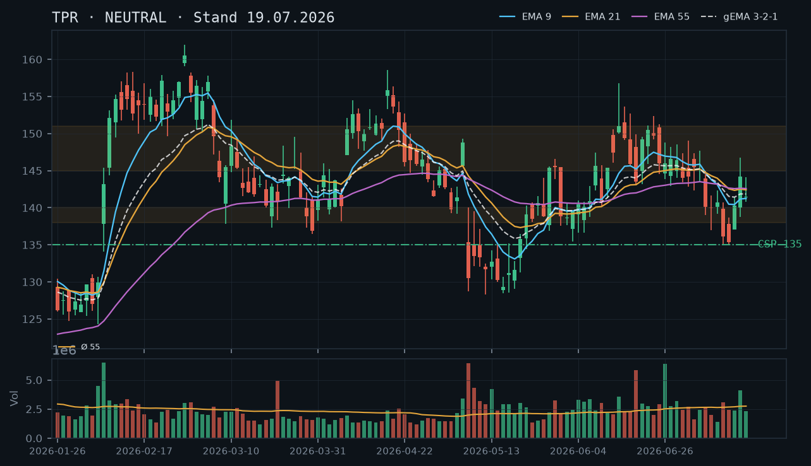
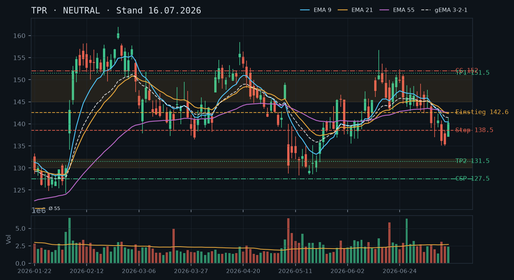
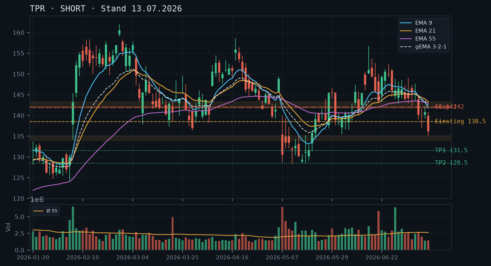
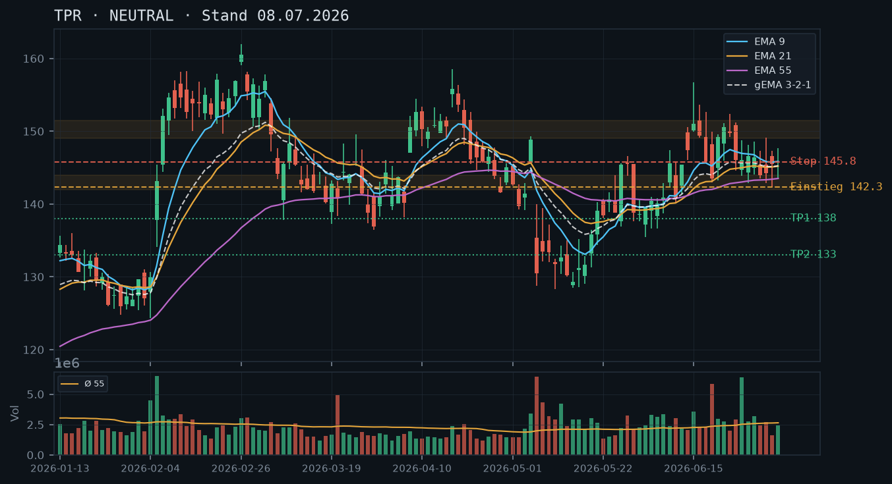

TPR
Analyse-Historie · neueste zuerstTPR bricht intraday mit -3,4% unter den EMA-Cluster und testet die Juli-Tiefzone – der CSP bei 135 aus der 19.07.-Analyse steht unter Druck; kein neues direktionales Setup, aber ein überarbeiteter CSP tiefer in der Struktur ist vertretbar.

1 · Trendstruktur
TPR hat nach der Erholungsphase Mitte Juli (Hoch 146,77 am 16.07.) wieder nachgegeben und notiert am 23.07. intraday bei 138,80 (-3,4%). Die Struktur zeigt tiefere Schlusskurse seit dem Juni-Hoch (156,74 am 15.06.) und eine Abfolge von schwächeren Hochs (146,77 → 143,86 → 143,76). Die Juli-Tiefzone 135–136 (13./14.07.) wird gerade erneut angesteuert. Ein tragfähiger Support liegt bei 135–136 (zweifach getestet Juli), darunter die Mai-Cluster-Zone 128–133. Die Widerstandszone 145–147 hat sich mehrfach als Deckel erwiesen (16.07., 22.07. gescheitert).
2 · Candlestick-Formationen
Die letzte bestätigte Tageskerze (22.07.) war eine bullische Kerze mit Schluss 143,73 nahe dem Tageshoch – scheinbar konstruktiv. Der heutige Intraday-Drop auf 138,80 (-3,43%) konterkariert dieses Bild jedoch vollständig und deutet auf eine Bearish Engulfing-Konstellation auf Tagesbasis hin, sofern der Kurs am Tagestief oder darunter schließt. Das Volumen ist mit dem IBKR-Snapshot noch nicht ablesbar, aber ein solcher Abgabedruck nach einer +0,7%-Kerze ist ein klares Warnsignal.
3 · EMA-Lage (9 / 21 / 55)
Der EMA-Verbund ist extrem komprimiert: EMA9 (141,87), EMA21 (142,41), EMA55 (142,56) liegen innerhalb von 70 Basispunkten – ein klassisches Kompressions-Artefakt, das keine klare Trendrichtung signalisiert. Der gema_321 (142,16) bestätigt diese Neutralzone. Der aktuelle Intraday-Kurs (138,80) liegt rund 3% unter dem gesamten EMA-Block, was kurzfristig bärisch ist – exakt die Situation wie nach dem 13.07.-Bruch. Eine nachhaltige Erholung über 142,60 (oberes Ende des EMA-Clusters) wäre nötig, um das Bild zu drehen.
4 · Trade-Setup
| Richtung | Kein Trade |
| Einstieg | Abwarten: Short-Bestätigung bei Tagesschluss unter 136,00 (Bruch der Juli-Tiefs) oder Long-Trigger bei Tagesschluss über 143,00 (Rückeroberung EMA-Cluster) |
| Stop | Short-Stop: 143,50 (über EMA-Cluster und 22.07.-Schluss) / Long-Stop: 137,00 (unter Juli-Tiefs) |
| Ziel | Short: 130,00 (Mai-Cluster-Zone 128–133) / Long: 146,50 (Widerstandszone Juli) |
| CRV | Short ~2,5:1 / Long ~2,0:1 – beide nur bei Triggerbestätigung valid |
5 · Stillhalter (max. 12 Tage)
Der bisherige CSP-Strike 135,00 aus der 19.07.-Analyse ist durch den heutigen Intraday-Drop auf 138,80 unter erheblichen Druck geraten – der Puffer beträgt intraday nur noch ~2,7% statt 6,4%. Ein neuer CSP muss tiefer angesetzt werden, um einen technisch sinnvollen Puffer zur Juli-Unterstützungszone zu wahren. Ein Covered Call entfällt mangels Aktienbestand (0 Aktien laut IBKR). Ein Naked Call ist bei dieser Volatilität und unklarer Richtung nicht empfehlenswert.
| Geschäft | Cash-Secured Put |
| Strike | 130.0 |
| Puffer | 6.3 % |
| Zone | unter der Mai-Cluster-Unterstützungszone 128–133 (Tiefs 07./08./12./14./15.05.2026) |
| Verfall bis | 2026-08-01 (9 Tage) |
| Begründung | Der Strike 130,00 liegt knapp unterhalb der Untergrenze der Mai-Cluster-Zone (128–133), die zwischen dem 07. und 15.05. intensiv gehandelt wurde. Diese Zone hat mehrfache Bounce-Versuche gesehen und stellt den nächsten tragfähigen Support unter den Juli-Tiefs (135–136) dar. Der Puffer berechnet sich auf Basis des IBKR-Intraday-Kurses 138,80 auf 6,3%. Ein Rückfall auf 130 würde sowohl die Juli-Tiefs (135–136, zweifach getestet) als auch die gesamte Mai-Unterstützungszone durchbrechen – technisch ein signifikantes Szenario, das deutliche makro- oder unternehmensspezifische Katalysatoren erfordern würde. Andienungsszenario: Ein Kauf zu 130,00 wäre aus charttechnischer Sicht in der Nähe des Jahrestiefbereichs (Tief 128,34 am 12.05.) als längerfristige Einstiegszone zu werten – das Andienungsrisiko ist damit vertretbar für einen Stillhalter mit moderater Risikotoleranz. Abweichung von früherem CSP-Strike: Der Strike 135,00 (19.07.-Analyse) wird hiermit verworfen, da der heutige Intraday-Kurs von 138,80 den Puffer auf ~2,7% erodiert hat und ein Tagesschluss unter 136 den Strike unmittelbar in die Gefahrenzone brächte. In der Optionskette zu prüfen: Prämie im Verhältnis zum 6,3%-Puffer (bei erhöhter IV durch den heutigen Sell-off sollte die Prämie am 130er attraktiver sein als zuletzt), Bid-Ask-Spread und Open Interest im 130er Strike der Wochenserie 01.08.2026. Roll-Trigger: Tagesschluss unter 135,00 (Bruch der Juli-Tiefs auf Schlusskursbasis) wäre das Signal, den Put defensiv zu rollen oder zu schließen. |
Ausführliche Analyse vom 23.07.2026 anzeigen
TPR – Detailanalyse 23.07.2026
1. Trendstruktur und Makro-Kontext
TPR befindet sich in einem mittelfristigen Abwärtstrend vom Juni-Hoch (156,74 am 15.06.2026). Die Sequenz der Hochpunkte zeigt eine klare Abwärtsstruktur: 156,74 (15.06.) → 152,34 (24.06.) → 149,57 (22.06.) → 146,77 (16.07.) → 143,86 (22.07.). Gleichzeitig wurden die Tiefs teilweise verteidigt: 135,03 (14.07.) und 135,09 (13.07.) bildeten eine doppelt getestete Unterstützung, die heute intraday erneut angesteuert wird (138,80 intraday, -3,43%).
Die heutige Kursbewegung ist besonders relevant, weil sie die scheinbar konstruktive 22.07.-Kerze (Schluss 143,73, nahe Tageshoch) vollständig negiert. Das Muster erinnert stark an die Situation vom 08.07. (Schluss 140,14) und 13.07. (Schluss 136,13), die den letzten Abwärtsschub einleiteten. Die frühere NEUTRAL-Einschätzung vom 19.07. wird durch den heutigen Intraday-Druck in Frage gestellt, aber noch nicht formell verworfen – entscheidend ist der Tagesschluss.
Schlüssel-Zonen:
- Widerstand 145–147: Mehrfach getestet und gescheitert (16.07. Hoch 144,11, 17.07. Hoch 144,11, 21.07. Hoch 143,76, 22.07. Hoch 143,86). Nicht mehr als Zone zu bezeichnen, sondern als bestätigter Deckel.
- Unbestätigter Support 138–140: Bounce-Zone aus Juli (17.07. Tief 140,81, 20.07. Tief 140,02) – heute bereits durchbrochen (intraday 138,80).
- Bestätigter Support 135–136: Zweifach getestet 13./14.07. (135,09 / 135,03) – wird heute erneut angelaufen.
- Mai-Cluster-Zone 128–133: Mehrfach bestätigter Support 07.–15.05.2026 (Tiefs 128,34 / 128,48 / 128,56 / 128,76 / 130,00 / 130,38 / 132,02). Stärkste Unterstützungszone im Chart der letzten 90 Kerzen.
2. Candlestick-Analyse
Die letzte Tageskerze (22.07., Schluss 143,73) schien bullisch – Schluss nahe Tageshoch, leicht steigende Tendenz. Der heutige Intraday-Drop von 143,73 auf 138,80 (-3,43%) deutet auf eine Bearish Engulfing-Konstellation hin, die das gesamte Kerzenmuster der letzten Sitzung konsumiert. Dies ist ein starkes Warnsignal. Das Rel-Volumen vom 22.07. war mit 0,73 unterdurchschnittlich – die Aufwärtsbewegung der letzten Tage (20.–22.07.) erfolgte also auf schwachem Volumen, was die heutige Schwäche im Nachhinein als Distribution interpretierbar macht.
Zum Vergleich: Am 16.07. (rel_volumen 1,50) und 13.07. (rel_volumen 1,17) waren die Abwärtskerzen volumengestützt. Sollte der heutige Tag ebenfalls mit erhöhtem Volumen schließen (was der -3,43%-Move nahelegt), wäre das eine Bestätigung der Bärenseite.
3. EMA-Lage
Der EMA-Verbund ist auf historisch engem Raum komprimiert: EMA9 (141,87), EMA21 (142,41), EMA55 (142,56), gema_321 (142,16). Die Reihenfolge EMA9 < EMA21 ≈ EMA55 ist ein Kompressions-Artefakt ohne klare Trendaussage. Der Kurs notiert intraday rund 3% unter dem gesamten Block – identisch mit der Situation vom 13.07. (Schluss 136,13 vs. EMA-Cluster 141–143), die in der 13.07.-Analyse korrekt als Short-Signal identifiziert wurde.
Abgleich mit früheren Analysen: Die 13.07.-Analyse (SHORT) war zunächst korrekt, wurde aber durch die massive Reversal-Kerze am 15.07. (+3,9%) konterkariert – diese hatte rel_volumen 0,88, also nicht außergewöhnlich hoch. Die Erholung bis 22.07. erfolgte auf durchgehend unterdurchschnittlichem Volumen (0,60–0,84). Das bestätigt rückwirkend, dass die Erholung strukturell schwach war. Die 19.07.-NEUTRAL-Einschätzung mit CSP 135,00 war unter den damaligen Bedingungen vertretbar, ist heute aber revisionspflichtig.
4. Direkte Trade-Setups
Setup A – Short-Bestätigung (bevorzugt bei Tagesschluss unter 136,00):
- Einstieg: Stop-Sell bei 135,90 (Tagesschluss unter Juli-Tiefs)
- Stop: 143,00 (über EMA-Cluster)
- Ziel 1: 131,50 (obere Kante Mai-Zone) – CRV ~0,6:1 (zu schwach als Primärziel)
- Ziel 2: 128,50 (Mai-Tief-Cluster) – CRV ~1,7:1 (akzeptabel)
- Ziel 3: 125,00 (psychologisch, unter den Mai-Tiefs) – CRV ~2,3:1 (gut)
Setup B – Long-Reversal (nur bei Rückeroberung des EMA-Clusters):
- Einstieg: Stop-Buy bei 143,10 (Tagesschluss über EMA-Block)
- Stop: 139,00 (unter 138–140-Zone)
- Ziel 1: 146,50 (Juli-Widerstand) – CRV ~0,8:1 (zu schwach)
- Ziel 2: 151,00 (Juni-Konsolidierungszone) – CRV ~1,9:1 (vertretbar)
Bevorzugtes Setup: Kein Trade heute – abwarten bis Tagesschluss, da intraday-Daten (IBKR-Snapshot 11:38 Uhr) keine Schlussaussage erlauben. Der Handlungsrahmen ist klar definiert.
5. Stillhalter-Setups (Schwerpunkt)
Überprüfung bestehender/früherer CSP-Empfehlung:
Der CSP-Strike 135,00 aus der 19.07.-Analyse (Verfall 25.07.) ist heute unter erheblichem Druck. Der Intraday-Kurs 138,80 reduziert den Puffer auf rechnerisch ~2,8%. Ein Tagesschluss unter 136,00 würde die Juli-Tiefs brechen und den 135er Strike in unmittelbare Reichweite bringen. Da laut IBKR-Snapshot keine Optionsposition besteht (leere Optionsliste), entsteht kein unmittelbarer Roll-Bedarf – der CSP 135 war eine Empfehlung, keine bestehende Position.
Neuer CSP-Vorschlag: Strike 130,00, Verfall 01.08.2026:
Die Wahl des Strikes 130,00 folgt einer strengen Zonenableitung: Der nächste technisch valide Support nach dem Bruch der Juli-Tiefs (135–136) ist die Mai-Cluster-Zone mit Tiefs zwischen 128,34 und 133,48 (07.–15.05.2026, insgesamt 8 Handelstage im Bereich). Der Strike 130 liegt knapp unter der Zonenuntergrenze (128,34 Tief 12.05.) und hat damit die gesamte Zone als Puffer vor sich.
Zonen-Herleitung:
- Obere Kante Mai-Zone: ~133,50 (Schluss 08.05.: 133,48)
- Mitte Mai-Zone: ~131,00
- Untere Kante Mai-Zone: ~128,34 (Tief 12.05.)
- Strike 130,00: innerhalb der Zone, aber mit dem Jahrestief (128,34) als letzter Verteidigungslinie darunter
Puffer zum aktuellen Intraday-Kurs (138,80): (138,80 – 130,00) / 138,80 = 6,3%
Andienungsszenario: Ein Kauf von TPR zu 130,00 wäre im Kontext der Chartstruktur als opportunistischer Einstieg nahe des Jahrestiefbereichs zu werten. Der langfristige Buchwert und die historischen Niveaus geben bei 128–130 eine gewisse Basis, auch wenn aus rein charttechnischer Sicht ein Durchbruch unter 128 nicht ausgeschlossen ist. Für einen Stillhalter mit moderater Risikotoleranz ist die Andienung akzeptabel, solange kein beschleunigter Downtrend unter 125 droht.
Was in der Optionskette zu prüfen ist:
- Prämie am 130er Put (Verfall 01.08.): Bei erhöhter impliziter Volatilität durch den heutigen Sell-off sollte die Prämie attraktiver sein als unter Normalkonditionen. Ein Mid-Preis von mindestens 0,60–0,90 wäre bei einem 6,3%-Puffer und 9 Tagen Restlaufzeit zu erwarten.
- Bid-Ask-Spread und Open Interest im 130er Strike der Wochenserie – Liquidität ist bei TPR-Wochenseries erfahrungsgemäß ausreichend, aber zu verifizieren.
- Delta sollte unter 0,20 liegen, um das Risikoprofil im Rahmen zu halten.
Roll-Trigger: Tagesschluss unter 133,00 (Bruch der oberen Mai-Cluster-Kante auf Schlusskursbasis) wäre das Signal, den 130er Put defensiv zu rollen – entweder auf einen tieferen Strike (z.B. 125,00) oder durch Schließung.
Covered Call / Naked Call: Entfällt. Kein Aktienbestand vorhanden (0 Aktien, IBKR-Snapshot). Ein Naked Call bei dieser Marktstruktur und dem aktuellen Momentum wäre nicht empfehlenswert.
TPR erholt sich nach dem Short-Selloff in eine Konsolidierungszone – die EMA-Struktur ist komprimiert und ohne klaren Trendimpuls, kein neues direktionales Trade-Setup, aber ein CSP mit solidem Puffer ist wieder vertretbar.

1 · Trendstruktur
Die Trendstruktur ist nach dem Rückgang von ~151 (Juni-Hoch) auf ~135 (13./14.07.-Tief) und der anschließenden Erholung auf 144,19 (aktuell, laut IBKR-Snapshot vom 19.07.) uneinheitlich. Das Bild zeigt niedrigere Tiefs (Jun-Hoch 156,74 → Jul-Tief 135,03) bei gleichzeitiger Erholung, die jedoch noch kein bestätigtes höheres Hoch produziert hat. Die kurzfristige Struktur ist damit als Erholungsrally innerhalb eines intakten mittelfristigen Abwärtstrends zu werten. Wichtige Levels: Unterstützung 138–140 (Jul-Boden, mehrfach getestet), Widerstand 145–151 (Juni-Konsolidierungszone, nun von oben kommend).
2 · Candlestick-Formationen
Die letzten vier Kerzen zeigen: 15.07. – starke Reversal-Kerze (Low 137,05, Close 140,26, Spread ~4,3%); 16.07. – bullische Fortsetzungskerze mit deutlichem Anstieg auf Close 144,19 bei erhöhtem Volumen (rel. 1,50×); 17.07. – Inside-Bar bzw. leichter Rücksetzer (Close 141,46, Tages-High 144,11), Konsolidierung nach dem Schub. Das Kerzenbild signalisiert Erholungsmomentum, das aber an der 144–146er Zone vorerst abebbt – kein Kapitulations- oder Breakout-Signal erkennbar.
3 · EMA-Lage (9 / 21 / 55)
Die EMAs (EMA9: 141,24 / EMA21: 142,41 / EMA55: 142,58) sind extrem komprimiert und liegen in untypischer Reihenfolge: EMA9 unter EMA21 und EMA55, EMA21 und EMA55 nahezu identisch – ein klassisches Kompressions-Artefakt nach dem schnellen Abverkauf und der ebenso schnellen Erholung. Der gema_321 (141,85) liegt knapp unter dem aktuellen Kurs (144,19), was leicht bullisch zu werten ist, jedoch ohne Überzeugungskraft. Erst ein nachhaltiger Schluss über 145+ würde die EMA-Reihenfolge (EMA9 > EMA21 > EMA55) wieder herstellen und einen klaren Long-Bias signalisieren.
4 · Trade-Setup
| Richtung | Kein Trade |
| Einstieg | Long-Trigger: Tagesschluss über 146,00 (Ausbruch über den Juni-Widerstandsbereich), alternativ Short-Reaktivierung bei Rückfall unter 138,50 |
| Stop | Long-Stop: 140,50 (unter der Reversal-Kerze vom 15.07. und dem EMA-Cluster) / Short-Stop: 146,50 |
| Ziel | Long: 151,50 (obere Juni-Konsolidierungszone) / Short: 133,00 (Mai-Unterstützungszone) |
| CRV | Long ~2,0:1 / Short ~2,1:1 – beide Setups nur bei Triggerbestätigung valide |
5 · Stillhalter (max. 12 Tage)
Nach der Stabilisierung über der Jul-Unterstützung (138–140) und der Erholung auf 144 ist ein Cash-Secured Put mit ausreichend Puffer wieder vertretbar – die Marktlage ist nicht mehr im freien Fall wie am 13.07. Ein Covered Call scheidet aus, da laut IBKR-Snapshot kein Aktienbestand vorhanden ist (0 Aktien), und ein Naked Call wäre angesichts der unklaren Richtungsdynamik nicht empfehlenswert.
| Geschäft | Cash-Secured Put |
| Strike | 135.0 |
| Puffer | 6.4 % |
| Zone | unter der Juli-Unterstützungszone 138–140 (mehrfach getestete Tiefpunkte 13./14./15.07.) sowie unter dem unbestätigten Unterstützungsbereich 135–136 (13.07.-Schluss 136,13 / 14.07.-Tief 135,03) |
| Verfall bis | 2026-07-25 (6 Tage, nächster Standard-Freitag nach Analyse-Datum 19.07.) |
| Begründung | Der Strike 135,00 liegt unterhalb der Juli-Tiefs (135,03 am 14.07., 135,085 am 13.07.) und hat damit sowohl die Zone 138–140 (mehrfach bestätigter Bounce-Bereich) als auch den Bereich 135–136 als doppelten Puffer vor sich. Ein Rückfall auf 135 würde einen erneuten Test und Bruch der Juli-Tiefs erfordern – technisch nur bei einer starken Trendfortsetzung nach unten wahrscheinlich. Andienungsszenario: Ein Kauf zu 135 wäre bei der aktuellen Kursstruktur als attraktive Einstiegszone zu werten, da dieser Bereich dem Mai-Tief-Cluster (128–133) noch vorgelagert ist. Vom früheren CSP-Strike 127,50 (16.07.-Analyse) wird hiermit abgerückt, da der Kurs sich von diesem Level deutlich entfernt hat und die Prämie dort bei 6 Tagen Restlaufzeit zu gering ausfallen dürfte. In der Optionskette zu prüfen: Prämie im Verhältnis zum 6,4%-Puffer (bei normaler IV sollte mindestens 0,50–0,80 erzielbar sein), Liquidität und Spread am 135er Strike im Wochenseries-Kontrakt. Roll-Trigger: Tagesschluss unter 138,00 (Rückfall unter die Bounce-Zone) wäre das Signal, den Put defensiv zu rollen oder zu schließen. |
Ausführliche Analyse vom 19.07.2026 anzeigen
TPR – Detailanalyse 19.07.2026
1. Trendstruktur und Historischer Abgleich
Die Analyse vom 08.07.2026 (NEUTRAL, Konsolidierung 143–151) wurde durch den Abverkauf ab 08.07. klar widerlegt – TPR brach die EMA-Cluster-Unterstützung nach unten durch und traf am 13./14.07. Tiefs bei 135,03–136,13. Die SHORT-These vom 13.07.2026 (Einstieg ~138, Ziel 131,50) war kurzfristig im Gewinn, wurde aber durch die massive Reversal-Kerze vom 15.07. (+3,9%) in Frage gestellt. Die NEUTRAL-Einschätzung vom 16.07.2026 war korrekt: Es fehlte noch die Bestätigung einer Richtung.
Stand heute (19.07., IBKR-Kurs 144,19) hat TPR die Reversal-Bewegung ausgebaut (16.07.: +4,43% auf 144,19, rel. Volumen 1,50×) und anschließend mit 141,46 am 17.07. konsolidiert. Das kurzfristige Bild zeigt: Erholungsrally innerhalb des mittelfristigen Abwärtstrends. Strukturell niedrigere Tiefs (Apr-Hoch 158,56 → Jun-Hoch 156,74 → Jul-Tief 135,03) dominieren das Bild. Ein neues höheres Hoch über ~151 wäre nötig, um die Abwärtsstruktur zu brechen.
Schlüsselzonen:
- Support 138–140: Mehrfach getesteter Bounce-Bereich (Jul-Tiefs, Reversal-Basis) – bestätigt als tragende Zone
- Support 130–133: Mai-Unterstützungszone (Tiefs 07.–15.05.), noch nicht erneut getestet
- Widerstand 145–151: Ehemalige Juni-Konsolidierungszone (12.–30.06.), nun von unten zu überwinden – mehrfach bestätigt
- Widerstand 154–157: Bereich der April/Juni-Hochs – relevanter erst bei Trendwende
2. Candlestick-Formationen (Detail)
Der 15.07. produzierte eine klassische Hammer/Reversal-Kerze: Open 137,05, Low 137,05, High 141,37, Close 140,26 – langer Schatten nach unten, nahezu kein Oberschatten, bullisches Signal direkt nach dem Jahrestief-Bereich. Der 16.07. bestätigte mit einer starken bullischen Kerze (Open 140,00, High 146,77, Close 144,19) bei 1,50× Durchschnittsvolumen – ein echter Bestätigungstag. Der 17.07. zeigt eine Inside-Bar (High 144,11 unter dem High vom 16.07.), was kurzfristige Erschöpfung oder Konsolidierung signalisiert, aber keine Trendumkehr.
Kritisch: Das High vom 16.07. (146,77) wurde am 17.07. nicht übertroffen. Für eine Fortsetzung der Erholung müsste TPR über 146,77 schließen – das wäre der Trigger für Long-Setup A.
3. EMA-Analyse (Detail)
EMA9 (141,24) liegt unter EMA21 (142,41) und EMA55 (142,58) – eine inverse Reihenfolge, die als Kompressions-Artefakt nach dem schnellen Abverkauf und Bounce zu werten ist. Der gema_321 (141,85) liegt ~2,34 Punkte unter dem aktuellen Kurs (144,19), was eine leichte bullische Divergenz signalisiert. Jedoch: Alle drei EMAs verlaufen quasi flach bis leicht abwärts. Erst wenn EMA9 über EMA21 und EMA55 kreuzt (rechnerisch bei anhaltenden Schlusskursen über ~143,5 nötig), wird die EMA-Reihenfolge bullisch. Das war zuletzt Mitte Juni der Fall, als die große Abwärtswelle begann.
4. Alternative Trade-Setups
Setup A – Long Breakout: Einstieg Stop-Buy über 147,00 (über dem 16.07.-High und der unteren Widerstandszone), Stop 141,00 (unter dem EMA-Cluster), Ziel 1: 151,50 (CRV ~0,75:1, zu gering), Ziel 2: 157,00 (CRV ~1,7:1). Nur akzeptabel als Teilposition mit Ziel 2. Fazit: Knapp valide, aber nicht bevorzugt.
Setup B – Short Reaktivierung: Einstieg Stop-Sell unter 138,50 (Rückfall unter die Reversal-Basis), Stop 143,00 (über dem EMA-Cluster), Ziel 133,00 (CRV ~1,2:1, zu gering), Ziel 2: 130,00 (CRV ~1,9:1). Fazit: Erst bei Bruch unter 138,50 valide – derzeit kein aktiver Trigger.
Setup C – Abwarten (bevorzugt): Kein direktionaler Trade bis zur Klärung. Die komprimierten EMAs und die Inside-Bar vom 17.07. rechtfertigen Geduld. Kapital wird über den Stillhalter-CSP produktiv eingesetzt.
5. Stillhalter-Strategie (Schwerpunkt)
Positionsabgleich (IBKR-Snapshot 19.07. 12:14 Uhr)
Laut IBKR-Snapshot sind kein Aktienbestand und keine offenen Optionspositionen in TPR vorhanden. Ein Covered Call scheidet damit aus. Ein Naked Call wäre angesichts der unklaren Richtungsdynamik und der Erholungsbewegung nicht empfehlenswert – das Risiko-Profil ist asymmetrisch zum Nachteil. Der Fokus liegt ausschließlich auf dem Cash-Secured Put (CSP).
CSP – Strike 135,00, Verfall 25.07.2026 (6 Tage)
Zonen-Herleitung: Der Strike 135,00 liegt unterhalb zweier Puffer-Ebenen: (1) der Zone 138–140 (Juli-Bounce-Bereich, dreifach bestätigt am 13./14./15.07.) und (2) dem Cluster 135,03–136,13 (Tiefs vom 13. und 14.07.). Ein Rückfall auf 135 würde beide Zonen nach unten durchbrechen – das wäre strukturell ein neues Tief und ein klares negatives Signal, das über bloße Konsolidierung hinausgeht.
Puffer-Rechnung: Aktueller Kurs 144,19 → Strike 135,00 → Puffer 9,19 Punkte = 6,4%. Der Kurs müsste 6,4% fallen, bevor der Strike berührt wird.
Andienungsszenario: Ein Kauf zu 135,00 wäre aus technischer Sicht vertretbar. Der Bereich liegt zwischen der Mai-Unterstützungszone (130–133) und den Juli-Tiefs – eine Zone, die strategisch interessant wäre. Keinesfalls ist eine Andienung als Katastrophe zu werten, solange das Mai-Tief bei 128,48 nicht gebrochen wird.
Abgleich mit Voranalysen: Der CSP-Strike 127,50 aus der 16.07.-Analyse wird hiermit verworfen. Mit dem Kursanstieg auf 144,19 ist der 9,1%-Puffer zur 127,50er Zone auf ~11,6% gestiegen – bei 6 Tagen Restlaufzeit ist dort kaum noch sinnvolle Prämie erzielbar. Der Strike 135,00 bietet bei gleichem Risikoprofil die bessere Prämienausbeute.
Roll-Logik: Tagesschluss unter 138,00 (Rückfall unter die Bounce-Zone) ist der primäre Roll-Trigger – dann wäre der Strike 135 bedroht und ein defensiver Roll auf den nächsten Freitag (01.08.2026) auf Strike 130,00 sinnvoll. Sekundärer Trigger: Annäherung des Deltas an -0,35 bis -0,40 (in der Optionskette zu prüfen).
In der Optionskette zu prüfen:
- Prämie (Mid): Bei IV im üblichen TPR-Bereich sollten 0,40–0,70 realistisch sein – unter 0,30 lohnt das Risiko nicht
- Delta: Idealerweise zwischen -0,15 und -0,25 für diese Laufzeit
- Bid/Ask-Spread: Sollte nicht mehr als 0,15–0,20 betragen
- Open Interest: Mindestens 200–300 Kontrakte für akzeptable Liquidität am 135er Strike
Der Short-Trigger vom 13.07. (138,00) wurde am 14.07. ausgelöst und war zunächst im Gewinn, doch am 15.07. folgte eine massive Umkehrkerze (+3,9%, Schluss 140,26) fast bis an den Stop (142,00) heran – die Short-These ist damit ernsthaft in Frage gestellt, ohne bislang formal gestoppt zu sein. Eine klare Entscheidung steht noch aus.

1 · Trendstruktur
Die Short-These vom 13.07. triggerte sauber am 14.07. (Hoch 138,64) und lief zunächst zugunsten der Position (Tief 135,03 am 14.07., nahe dem Zwischenziel). Am 15.07. kam es jedoch zu einer kraftvollen Umkehr: Eröffnung 137,05 (=Tagestief, kein Abwärtsdocht), Hoch 141,37, Schluss 140,26 – ein Anstieg von 3,9% an einem einzigen Tag, der fast den gesamten Verlust seit dem 13.07. wieder wettmacht und den Stop-Bereich (142,00) nur knapp verfehlt.
2 · Candlestick-Formationen
13.07.: Schluss 136,13, klare Schwächekerze. 14.07.: neues Tief 135,03, Schluss 135,36 – Short-These bestätigt. 15.07.: kraftvolle grüne Kerze ohne Eröffnungsdocht nach unten, Schluss 140,26 nahe dem Tageshoch 141,37 – ein klassisches Reversal-Signal, das die Kurzfrist-Dynamik komplett gedreht hat.
3 · EMA-Lage (9 / 21 / 55)
EMA9 (140,43) < gema_321 (141,42) < EMA21 (142,34) < EMA55 (142,57) – weiterhin bearische Reihenfolge, aber der Kurs (140,26) hat sich nach der Reversal-Kerze bis knapp unter EMA9 zurückgekämpft. Die Entscheidung fällt jetzt an diesem engen EMA-Cluster (140,43–142,57): Ein Schluss darüber würde den Abwärtstrend technisch brechen.
4 · Trade-Setup
| Richtung | Kein Trade |
| Einstieg | Abwarten: Short-Fortsetzung bei Tagesschluss unter 137,00 (Rückfall unter die Reversal-Kerze) oder Long-Bestätigung bei Tagesschluss über 142,60 (voller EMA-Cluster-Ausbruch) |
| Stop | Short-Stop: 142,60 (über dem gesamten EMA-Cluster, nachgezogen von 142,00) / Long-Stop: 138,50 (unter der Reversal-Kerze) |
| Ziel | Short: 131,50 (unverändert, Mai-Zone 130-132) / Long: 151,50 (Widerstandszone aus der 08.07.-Analyse) |
| CRV | Short ~1,0:1 (schwach nach der Reversal-Kerze) / Long ~2,2:1 (attraktiver, falls Reversal bestätigt) |
5 · Stillhalter (max. 12 Tage)
Nach der Reversal-Kerze ist eine reine Short-Ausrichtung wie am 13.07. nicht mehr gerechtfertigt. Die von der Vorlage referenzierte Mai-Zone 130-132 bleibt ein CSP-Kandidat, während die mehrfach getestete Juni-Konsolidierungszone 145-151 einen soliden CC-Anker liefert, der der aktuellen Unsicherheit besser gerecht wird als ein reiner CC nahe der aktuellen Kurslage wie zuletzt.
| Geschäft | Cash-Secured Put |
| Strike | 127.5 |
| Puffer | 9.1 % |
| Zone | unter der Mai-Unterstützungszone 130-132 (Referenz aus der 13.07.-Analyse) |
| Verfall bis | 2026-07-24 (8 Tage) |
| Begründung | Strike liegt unter der in der Vorlage referenzierten Mai-Zone. Nach der kräftigen Reversal-Kerze vom 15.07. erscheint ein CSP wieder vertretbarer als am 13.07., als die Aktie im ungebrochenen Abwärtstrend war. Andienung bei 127,50 wäre dennoch nur bei einer erneuten deutlichen Verschlechterung relevant. Prüfen: Prämie im Verhältnis zum 9,1%-Puffer, Liquidität am 127,50er. |
Ausführliche Analyse vom 16.07.2026 anzeigen
TPR – Dramatische Umkehr stellt Short-These in Frage
1. Wie sich die Short-These entwickelt hat
Der Trigger vom 13.07. (138,00) löste sauber am 14.07. aus und lief zunächst planmäßig (Tief 135,03). Doch bereits am Folgetag (15.07.) kam es zu einer der stärksten Umkehrbewegungen in dieser gesamten Analyseserie: +3,9% an einem Tag, Schluss nur 1,74 Punkte unter dem ursprünglichen Stop. Das ist kein gewöhnlicher Pullback, sondern ein Signal, das eine unveränderte Fortführung der Short-These nicht mehr rechtfertigt.
2. Warum die EMA-Zone jetzt entscheidend ist
Der Kurs steht direkt am unteren Rand des EMA9-142,57-Clusters. Ein Schluss darüber wäre ein technischer Trendbruch nach oben, ein Scheitern hier und ein Rückfall unter 137,00 würde die ursprüngliche Short-These dagegen wiederbeleben.
3. Setup-Neubewertung
Statt stur an der Short-These festzuhalten, ist hier ein Abwarten auf Bestätigung angebracht: Short-Fortsetzung erst unter 137,00 mit nachgezogenem Stop 142,60, Long-Bestätigung erst über dem vollen EMA-Cluster bei 142,60. Das Long-Szenario bietet mit CRV 2,2:1 deutlich mehr Substanz als die geschwächte Short-Fortsetzung (CRV ~1,0:1).
4. Stillhalter-Vertiefung
Die Reversal-Kerze rechtfertigt eine Rückkehr zu beidseitigen Stillhaltergeschäften, anders als am 13.07., als nur ein CC sinnvoll erschien. CSP bei 127,50 (9,1% Puffer) nutzt die von der Vorlage referenzierte Mai-Zone. CC bei 152,00 (8,4% Puffer) wurde deutlich angehoben, da der alte 142er-Strike durch die Kursbewegung praktisch aufgebraucht ist. Rollentrigger CSP: Tagesschluss unter 133,00. Rollentrigger CC: Tagesschluss über 142,60.
5. Abgleich mit früherer Analyse
Die Short-These vom 13.07. wird teilweise bestätigt (Trigger und Zwischenziel liefen zunächst planmäßig), aber durch die Reversal-Kerze vom 15.07. akut in Frage gestellt – eine unveränderte Fortführung ohne Neubewertung wäre hier fahrlässig gewesen.
TPR bricht die EMA-Cluster-Unterstützung nach unten durch und bestätigt einen kurzfristigen Abwärtstrend – die frühere NEUTRAL-Einschätzung wird verworfen.

1 · Trendstruktur
Die Konsolidierungszone 143–151, die in der Analyse vom 08.07. beschrieben wurde, ist nach unten aufgelöst worden. Seit dem Hoch vom 15.06. (156,74) bildet TPR eine Sequenz fallender Hochs (156,74 → 153,67 → 152,66 → 151,22 → 149,08 → 147,70 → 144,98) und nun auch fallender Tiefs (149,09 → 145,72 → 143,01 → 142,89 → 139,22 → 137,00 → 135,09). Der Schlusskurs vom 13.07. bei 136,15 liegt unterhalb aller drei EMAs – die Trendstruktur ist klar bärisch. Nächste Unterstützung: Bereich 134–133 (Mai-Böden 130–132 bilden die kritische Zone darunter).
2 · Candlestick-Formationen
Die letzte Kerze vom 13.07. ist eine ausgeprägte Abwärtskerze (Open 139,89, Close 136,15, Tief 135,09) mit langem Körper und wenig unterem Docht – kein Anzeichen von Käufern. Die Vortageskerze (09.07.) schloss ebenfalls schwach bei 139,93. Zwei aufeinanderfolgende Bearish-Candles mit jeweils tieferen Tiefs bestätigen den Verkaufsdruck. Kein Reversal-Signal sichtbar.
3 · EMA-Lage (9 / 21 / 55)
EMA9 (141,75) < EMA21 (143,27) < EMA55 (142,92) – die Reihenfolge ist bearish, wobei EMA21 knapp über EMA55 liegt, was eine Kreuzung nach unten ankündigt. Der gema_321 (142,45) liegt deutlich über dem Kurs (136,15), was einen Abstand von ca. 4,6% signalisiert und die bärische Überstreckung nach unten unterstreicht. Alle EMAs verlaufen nun nach unten – vollständig bearishes EMA-Bild.
4 · Trade-Setup
| Richtung | Short |
| Einstieg | 138,00 (Limit-Short bei Bounce in den EMA-Bereich bzw. unter Tagesschluss 136,15 Stop-Sell) |
| Stop | 142,00 (über EMA9/21-Cluster) |
| Ziel | 131,50 (Mai-Unterstützungszone 130–132) |
| CRV | 2.2 : 1 |
5 · Stillhalter (max. 12 Tage)
Im laufenden Abwärtstrend mit Kurs unter allen EMAs ist ein Cash-Secured Put nicht empfehlenswert – das Andienungsrisiko ist zu hoch und es fehlt ein tragfähiger Support in Reichweite. Ein Covered Call auf bestehende Positionen oder ein Naked Call oberhalb des EMA-Widerstands passt zur aktuellen Schwäche.
| Geschäft | Covered Call |
| Strike | 142.0 |
| Puffer | 4.3 % |
| Zone | EMA9/21/55-Cluster 141,75–143,27 als Widerstandszone |
| Verfall bis | 2026-07-18 (5 Tage) |
| Begründung | Der EMA-Cluster aus EMA9 (141,75), EMA55 (142,92) und EMA21 (143,27) bildet eine dichte Widerstandszone. Der Strike 142 liegt am unteren Rand dieser Zone und hätte den gesamten EMA-Block als Puffer vor sich. Ein Bounce über 142 hinaus wäre technisch anspruchsvoll, da der Kurs 4,3% tief unter diesem Level liegt und alle EMAs abwärts zeigen. Andienungsszenario: Eine Abgabe von Aktien zu 142 wäre bei einer Aktie, die gerade bei 136 notiert, ein attraktiver Ausstiegspreis. Der Anwender sollte in der Optionskette auf ausreichende Prämie prüfen (mind. 0,50–0,80 erscheint bei dieser Volatilität realistisch) und Liquidität im Wochenserie-Strike 142 verifizieren. Ein Rollen wäre angezeigt, wenn der Kurs über 141 schließt. |
Ausführliche Analyse vom 13.07.2026 anzeigen
TPR – Technische Analyse vom 13.07.2026
1. Trendstruktur
Die frühere NEUTRAL-Einschätzung vom 08.07.2026 wird hiermit explizit verworfen. Der damals beschriebene Long-Trigger bei 151,50 wurde nicht ausgelöst; stattdessen hat TPR die gesamte Konsolidierungszone 143–151 nach unten durchbrochen.
Makrostruktur seit Jahresbeginn: Nach einem Hoch bei 157,80 (04.03.) fiel die Aktie in einer ersten Welle auf ~128,48 (15.05., Tief). Eine Erholung führte bis 156,74 (15.06.) – ein unteres Hoch gegenüber dem März-Hoch. Seitdem: klare Sequenz fallender Hochs und fallender Tiefs. Der Schlusskurs am 13.07. bei 136,15 markiert ein neues 6-Wochen-Tief.
Wichtige Kursmarken:
- Widerstand: 141,75–143,27 (EMA-Cluster), dann 147–149 (Juni-Konsolidierung), 151–151,50 (obere Konsolidierungsgrenze)
- Unterstützung: 134–135 (Juni-Tief 135,09 heute getestet), 131,50–132 (Mai-Stabilisierungsbereich), 128–130 (kritisches Mai-Tief)
Volumen-Hinweis: Der 13.07. zeigte rel_volumen von nur 0,56 – kein Panikverkauf, eher dünnes Abgleiten. Das kann ein Bear-Flag-artiges Abwärtsschmelzen bedeuten. Auffällig hohe Volumina zuletzt waren 26.06. (2,53x) und 18.06. (2,48x), beide auf negativen Tagen – professionelle Verteilung.
2. Candlestick-Formationen
Die Kerze vom 13.07. (O: 139,89 / H: 140,74 / L: 135,09 / C: 136,15) ist ein klarer Bearish Marubozu-ähnlicher Körper: Eröffnung nahe am Tageshoch, Schluss nahe am Tagestief, kein relevanter oberer Docht. Dies signalisiert durchgängigen Verkaufsdruck ohne nennenswerte Gegenwehr.
Die Kerze vom 09.07. (C: 139,93) und 10.07. (C: 140,73) bildeten eine schwache Erholung, die am 13.07. vollständig negiert wurde. Es gibt keine Reversal-Formation (kein Hammer, kein Doji, kein Bullish Engulfing) in den letzten 5 Kerzen. Die Short-Thesis ist candlestick-technisch unwidersprochen.
3. EMA-Analyse
Aktuelle Werte (13.07.): EMA9 = 141,75 | EMA21 = 143,27 | EMA55 = 142,92 | gema_321 = 142,45
Die Reihenfolge EMA9 < EMA55 < EMA21 ist klassisch bearish mit einer Besonderheit: EMA55 liegt zwischen EMA9 und EMA21, was bedeutet, dass alle drei EMAs innerhalb von 1,5% dicht beieinanderliegen und einen kompakten Widerstandscluster bilden. Der gema_321 bei 142,45 – der gewichtete Verbund – liegt 4,6% über dem aktuellen Kurs, was die bärische Überstreckung verdeutlicht.
Trend des gema_321: Von 145,65 (08.07.) auf 142,45 heute – klarer Abwärtstrend im Verbund. Ein bearishes EMA-Death-Cross (EMA9 kreuzt EMA21 von oben) ist bereits vollzogen (EMA9 141,75 < EMA21 143,27). Die EMAs bilden nun einen klassischen bärischen Fächer.
4. Trade-Setups
Setup A – Short-Momentum (bevorzugt):
Einstieg: Stop-Sell unter dem heutigen Tief bei 134,90 (Bestätigung des Ausbruchs unter 135-Support) | Stop: 141,00 (über EMA9 und Widerstandszone) | Ziel 1: 131,50 (+/-132 Mai-Boden) | Ziel 2: 128,50 (absolutes Mai-Tief) | CRV zu Ziel 1: (134,90 – 131,50) / (141,00 – 134,90) = 3,40 / 6,10 = 0,56:1 → zu eng | CRV zu Ziel 2: (134,90 – 128,50) / 6,10 = 1,05:1 → akzeptabel bei Trend-Momentum
Setup B – Short-Bounce (bevorzugt für besseres CRV):
Einstieg: Limit-Short bei 138,00–139,00 (Bounce in den Bereich des gestrigen Schlusskurses, wo nun Overhead-Resistance liegt) | Stop: 142,00 (über EMA-Cluster) | Ziel 1: 131,50 | Ziel 2: 128,50 | CRV zu Ziel 1: (138,50 – 131,50) / (142,00 – 138,50) = 7,00 / 3,50 = 2,0:1 | CRV zu Ziel 2: 10,00 / 3,50 = 2,9:1 → bevorzugtes Setup
Setup C – Long-Reversal (konträr, nur bei starkem Signal): Ausschließlich bei Schlusskurs über 143,50 mit Volumen >1,5x Schnitt erwägenswert. Ziel: 149–151. Aktuell keine Basis.
5. Stillhalter-Setups (Schwerpunkt)
Gesamteinschätzung: Im laufenden Abwärtstrend mit Kurs 4,6% unter dem gema_321 und ohne tragfähigen nahen Support ist ein Cash-Secured Put nicht empfehlenswert. Die nächste relevante Unterstützung bei 131,50–132 liegt 3,4% tiefer – ein Strike unterhalb davon (z.B. 130) wäre zu weit OTM für sinnvolle Prämie, ein Strike bei 132–133 hätte zu wenig Puffer. Das Andienungsrisiko überwiegt.
Covered Call – Strike 142,00, Verfall 18.07.2026:
Zonen-Herleitung: Der EMA-Cluster (EMA9: 141,75 / EMA55: 142,92 / EMA21: 143,27) bildet eine natürliche, technisch robuste Widerstandszone. Alle drei EMAs konvergieren in einem 1,5%-Fenster von 141,75 bis 143,27. Der Strike 142 liegt am unteren Rand dieses Clusters – der gesamte EMA-Block dient als Puffer zwischen aktuellem Kurs (136,15) und dem Strike. Der Puffer beträgt (142,00 – 136,15) / 136,15 = 4,3%.
Andienungsszenario: Eine Abgabe von Aktien zu 142,00 wäre bei einem Einstandskurs unter 136 ein attraktiver Ausstieg mit Gewinnmitnahme. Technisch müsste TPR in 5 Handelstagen 4,3% steigen UND den gesamten EMA-Cluster überwinden – bei aktuell bearisher Dynamik und fallendem gema_321 ein anspruchsvolles Szenario für Käufer.
Was zu prüfen ist in der Optionskette: (1) Prämie für den 142 CC mit Verfall 18.07.: bei einer IV, die durch die jüngste Bewegung erhöht sein dürfte, sollte min. 0,50–0,80 drin sein – sonst ist das Chance/Risiko-Verhältnis zu schwach. (2) Open Interest und Bid-Ask-Spread für Liquidität. (3) Falls kein 18.07.-Verfall existiert (Wochenserie): nächster Standardverfall 25.07. wäre noch innerhalb des 12-Tage-Fensters (12 Tage = 25.07.).
Rollen-Trigger: Anpassung/Rollen des CC ist angezeigt, wenn TPR über 141,00 schließt (EMA9-Rückeroberung) oder ein Reversal-Volumentag mit rel_volumen >2,0 auftritt.
TPR befindet sich in einer engen Konsolidierungszone zwischen ~143 und ~151, die EMAs laufen flach zusammen – kein klarer Trendimpuls erkennbar.

1 · Trendstruktur
Nach dem starken Abverkauf von ~161 (Feb) auf ~128 (Mai) hat TPR eine mehrstufige Erholung vollzogen und notiert aktuell bei ca. 146,30. Die Trendstruktur zeigt jedoch keine klaren höheren Hochs/Tiefs: Das Hoch vom 15.06. bei 156,74 wurde nicht mehr erreicht, und seitdem bildet der Kurs ein fallendes Hochmuster (156,74 → 153,67 → 152,34 → 149,08 → 147,70). Support liegt bei ~142–143, Widerstand bei ~149–151.
2 · Candlestick-Formationen
Die letzten fünf Kerzen zeigen kleine Körper mit überwiegendem Doji-Charakter (Innenkerzen, geringe Volatilität). Die Kerze vom 07.07. schloss bei 146,30 mit langem unteren Schatten (~143,47 Tief) – kurzfristig bullisches Signal, jedoch ohne Bestätigung durch Volumen (rel. Vol. nur 0,92). Insgesamt signalisiert die Formation eine Pattsituation zwischen Käufern und Verkäufern.
3 · EMA-Lage (9 / 21 / 55)
EMA9 (145,86), EMA21 (145,20) und EMA55 (143,51) liegen sehr eng beieinander und nahezu flach – der gema_321 (145,25) bestätigt einen neutralen EMA-Verbund ohne klare Richtung. Der Kurs (146,30) liegt minimal über allen drei EMAs, was keine Signalkraft hat. Kreuzungen sind aktuell nicht aktiv.
4 · Trade-Setup
| Richtung | Kein Trade |
| Einstieg | Long-Trigger: Stop-Buy über 151,50 (Ausbruch über Widerstandszone) |
| Stop | 147,80 (unter EMA-Cluster) |
| Ziel | 157,00 (Annäherung an Feb-Hoch) |
| CRV | 1.5 : 1 |
Ausführliche Analyse vom 08.07.2026 anzeigen
TPR – Detailanalyse (Stand: 08.07.2026)
1. Trendstruktur
TPR hat zwischen Februar und Mai 2026 einen ausgeprägten Abwärtstrend von ~162 auf das Tief bei ~128,34 (12.05.) durchlaufen – ein Rückgang von rund 21%. Die anschließende Erholungsphase brachte den Kurs bis 156,74 am 15.06., womit er immerhin ~22% zurückgewann. Seitdem zeigt sich jedoch ein klares Muster fallender Hochs: 156,74 (15.06.) → 153,67 (16.06.) → 152,34 (24.06.) → 149,08 (02.07.) → 147,70 (07.07.). Die Tiefs halten sich stabiler im Bereich 142–144, was eine aufsteigende Unterstützungslinie suggeriert. Es entsteht ein symmetrisches Dreieck oder Keil, dessen Auflösung noch aussteht.
Wichtige Kursmarken:
- Starker Support: 142,50–143,50 (EMA55 + mehrfach getestetes Tief)
- Widerstand 1: 149,00–151,00 (Bereich der letzten Hochs)
- Widerstand 2: 153,50–156,75 (Juni-Hochs, relevante Hürde)
- Langfristiger Support: ~128–130 (Mai-Tief)
2. Candlestick-Formationen
Die letzten 5 Kerzen (01.07.–07.07.) zeigen allesamt kleine Realbodies mit Schlusskursen zwischen 143,99 und 146,56 – eine klassische Konsolidierungs-Congestion-Zone. Am 07.07. bildete sich eine Kerze mit langem unteren Schatten (Tief 143,47, Schluss 146,30), was Kaufinteresse an der Support-Zone signalisiert. Das Volumen war mit rel. 0,92 jedoch unterdurchschnittlich, was die Überzeugungskraft des Signals mindert.
Rückblick: Der 26.06. war mit rel. Vol. 2,53 ein erhöhter Volumentag – bei einem Schluss von 146,00 trotz höherem Intraday-Hoch von 148,78. Diese Kerze mit langem Oberschatten und hohem Volumen ist ein Distributionssignal. Auch der 18.06. (rel. Vol. 2,48) zeigte mit einem Schluss bei 143,50 nach Hoch 149,92 deutlichen Verkaufsdruck.
3. EMA-Lage und gema_321
Die EMA-Konfiguration per 07.07.2026: EMA9 = 145,86 / EMA21 = 145,20 / EMA55 = 143,51 / gema_321 = 145,25. Die Reihenfolge EMA9 > EMA21 > EMA55 deutet nominal auf ein bullisches Setup hin, die absoluten Abstände sind jedoch minimal (EMA9 zu EMA21: 0,66 Punkte, EMA9 zu EMA55: 2,35 Punkte). Der gema_321 bei 145,25 liegt nahezu deckungsgleich mit EMA9 und EMA21 – dies zeigt eine maximale EMA-Kompression, typisch für eine bevorstehende Bewegung (Breakout oder Breakdown).
Der Kurs (146,30) liegt 0,44 Punkte über EMA9 – keine signifikante Distanz. Die EMAs verlaufen seit Anfang Juli nahezu horizontal. Für ein bullisches Signal müsste der Kurs klar und mit Volumen über 149–151 ausbrechen; für ein bearisches Signal wäre ein Schlusskurs unter 143 (EMA55-Bruch) wegweisend.
4. Trade-Setups (Alternativen)
Setup A – Long-Breakout (bevorzugt, aber Trigger fehlt noch):
- Einstieg: Stop-Buy bei 151,50 (über Widerstandscluster)
- Stop-Loss: 147,50 (unterhalb EMA-Verbund und Konsolidierungsbasis)
- Ziel 1: 154,50 (kurzfristiger Widerstand)
- Ziel 2: 157,50 (Juni-Hochbereich)
- CRV zu Ziel 1: ~0,75:1 (unbefriedigend)
- CRV zu Ziel 2: ~1,5:1 (akzeptabel)
Setup B – Short-Breakdown:
- Einstieg: Stop-Sell bei 142,30 (Bruch unter EMA55 + Unterstützungszone)
- Stop-Loss: 145,80 (oberhalb EMA9)
- Ziel 1: 138,00 (Mai-Erholungsbereich)
- Ziel 2: 133,00 (Mai-Tief-Cluster)
- CRV zu Ziel 1: ~1,2:1
- CRV zu Ziel 2: ~2,6:1 (attraktiv)
Setup C – Beibehaltung NEUTRAL / Abwarten: Angesichts der engen EMA-Kompression, dem symmetrischen Konsolidierungsmuster und fehlenden Volumenbestätigung ist das Abwarten der Dreieck-Auflösung die konservativste Wahl. Ein Breakout mit rel. Vol. > 1,5 in eine Richtung würde klares Einstiegssignal liefern.
Fazit: TPR zeigt aktuell keine klare Direktionalität. Das beste Risiko/Chancen-Verhältnis bietet ein Short-Setup bei Bruch der 142-Unterstützung (Setup B), da das übergeordnete Bild (Abwärtstrend seit Feb, Distributions-Kerzen im Juni) eher bearisch ist. Long-Trades sind erst bei Ausbruch über 151,50 mit Volumen interessant.